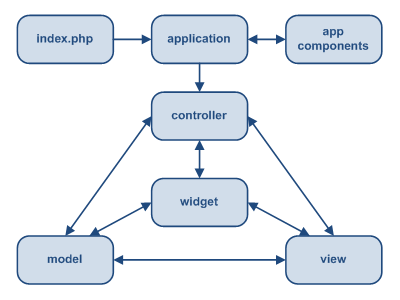
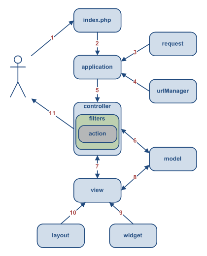

MVC Model-View-Controller avagy Modell-Nézet-Vezérlő
Model-View-Controller (MVC)
A Yii a model-view-controller (MVC / modell-nézet-kontroller/vezérlő) tervezési mintát valósítja meg, ami webprogramozás terén széleskörűen alkalmazott. Az MVC célja elválasztani az üzleti logikát a felhasználói felülettel kapcsolatos elgondolásoktól oly módon, hogy a fejlesztők minél könnyebben változtathassák meg az egyes részeket anélkül, hogy a többire hatással lennének. Az MVC mintában a modell képviseli az információt (adatot) és az üzleti logikát; a nézet tartalmazza a felhasználói felület elemeit, úgy mint szövegek, űrlapok; a kontroller/vezérlő pedig kezeli a modell és a nézet közti párbeszédet. Az MVC mellett a Yii a 'front-controller'-t, más néven alkalmazást, is bevezeti, ami a felhasználói kérések feldolgozásához biztosít végrehajtási környezetet. Az alkalmazás feloldja a felhasználói kérést, majd továbbítja a megfelelő kontrollernek további feldolgozásra.
A következő ábra egy Yii alkalmazás statikus felépítését mutatja: Egy tipikus munkafolymat
A következő ábra egy tipikus munkafolyamatot mutat, aminek során a Yii alklamzás egy felhasználói kérést kezel: - A felhasználó kérést intéz a következő URL-lel `http://www.example.com/index.php?r=post/show&id=1` a webszerver pedig a kérést kezelendő, végrehajtja a rendszertöltő `index.php` szkriptet.
- A rendszertöltő szkript létrehoz egy alkalmazás példányt, és futtatja.
- Az alkalmazás részletes információt kap a felhasználói kérésről a `request` nevű alkalmazás komponens-től.
- Az alklamazás meghatározza a kért kontroller-t és tevékenységet egy `urlManager` nevű alkalmazás komponens segítségével. A jelenlegi példában ez a `post` kontrollert jelenti, ami a `PostController` osztályra hivatkozik; a tevékenység pedig `show`, aminek a tényleges jelentését a kontroller határozza meg.
- Az alkalmazás példányosítja a kért kontrollert, hogy a továbbiakban kezelje a felhasználói kérést. A kontroller meghatározza, hogy a `show` tevékenység a kontroller osztályának `actionShow` metódusára vonatkozik. Ezek után a tevékenységhez kapcsolódó szűrőket hoz létre (pl.: hozzáférés ellenőrzés, benchmarking). A tevékenység végrehajtódik, ha a szűrők ezt engedélyezik.
- A tevékenység beolvassa az adatbázisból az `1`-es ID-jű `Post` modell-t.
- A tevékenység lefordítja a `show` nevű nézet-et a megadott `Post` modellel.
- A nézet kiolvassa és megjeleníti a `Post` modell tulajdonságait.
- A nézet végrehajt néhány kütyü-t.
- A nézetfordítási eredmény beillesztésre kerül az elrendezés-be.
- A tevékenység befejezi a nézet fordítást és az eredményt megjeleníti a felhasználónak.


{kind=link}
{kind=link}